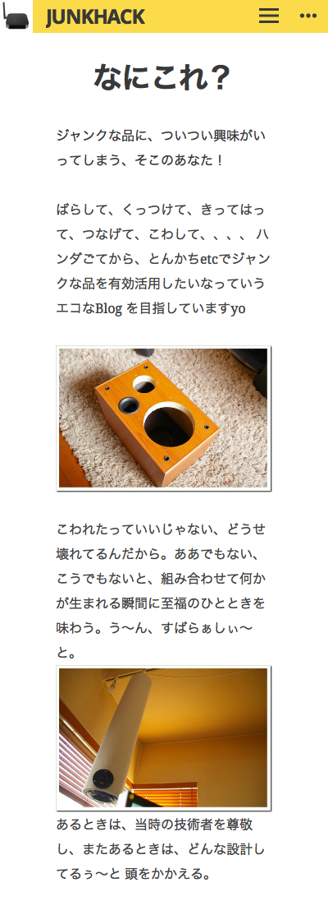

さて、ハードの調査が終わったので、今度はソースファイルの調査です。
まず、ざっとソースコードを見てみます。
osx 10.9.5 でやっています。
▼ソースをゲット
$ git clone http://git.spritesserver.nl/espeink.git/
$ cd espeink/
$ git submodule init
$ git submodule update
以下のことがわかりました。
▼ソフトウェア概略
・ESP12 の中で動作するwebサーバがmkespfsimageを使いe-ink にレンダリング
・データ受け渡しは、PhantomJS（pixelserver.js）を使っているよう
・画像形式は、.bm という白黒２値（グレー表示はあるのかな？）800×600を使用
・デフォルトで60秒ごとにsleep から目覚めるよう -> sleeptime , system_deep_sleep(60*1000*1000);
・初回起動時は、アクセスポイントの表示の初期設定が動作。メモリの特定領域に値があるかないかを見ている模様 -> RTC_MAGIC
・ライセンスは、Beer-Ware license 🙂
https://en.wikipedia.org/wiki/Beerware
&" data-wpel-link="external" target="_blank" rel="external noopener noreferrer" class="wpel-icon-right">https://github.com/atomicobject/heatshrink
Lempel–Ziv–Storer–Szymanski (LZSS)ベースのようです。
・ソースをビルドするには、SDK (toolchain) が必要
・esp-open-sdkの環境を作れば良いかと思う
・環境構築は、osx でまずチャレンジ
PhantomJSって何でしょうか？
とりあえず、まぁ、使ってみれば理解も深まるはずです。
osx のローカルに入れてみます。
$ brew install phantomjs
サンプルはググって以下のようにしました。
---- test.js
// Headless ブラウザの生成
var page = require('webpage').create();
// URL を開く
page.open('https://hack.gpl.jp/about/', function(status) {
if (status === 'success') {
// スクリーンキャプチャ
page.render('junkhack.png');
// ブラウザ内で JS を実行してデータを受け取る
var title = page.evaluate(function() {
var title = document.title;
return title;
});
console.log(title);
}
// exit しないと終了しない
phantom.exit();
});
・実行してみます。
$ phantomjs test.js
カレントディレクトリに、junkhack.png ができている。ほーなるほど。
ということは、PhantomJSが動作するサーバが必要だってことでしょうかね？ESP12 でPhantomJSが動作するということですかね？ちょっとこのあたりは良くわかっていません。
その内、進むにつれ解るはずだと思うので、スルーします。

とりあえず、osx でビルドする環境を整えてみることにしてみます。
▼ビルドする環境の構築 for osx 10.9.5
・以下にある説明通り
https://github.com/pfalcon/esp-open-sdk
$ brew tap homebrew/dupes
$ brew install binutils coreutils automake wget gawk libtool gperf gnu-sed –with-default-names grep
★ちょっと時間はかかります。エラーになっていないかコンソールを確認。
・sed は gnu のを使うようにするようです。以下のようにならなければ、パスを.bash_profileに設定しておきます。
$ which sed
/usr/local/opt/gnu-sed/libexec/gnubin/sed
$ export PATH="/usr/local/opt/gnu-sed/libexec/gnubin:$PATH"
・10G の大文字小文字ファイル名を区別するHFS+ボリュームを作製。マウントし、移動。
$ sudo hdiutil create ~/Documents/case-sensitive.dmg -volname "case-sensitive" -size 10g -fs "Case-sensitive HFS+" $ sudo hdiutil mount ~/Documents/case-sensitive.dmg $ cd /Volumes/case-sensitive $ git clone --recursive https://github.com/pfalcon/esp-open-sdk.git
スタンドアローンなSDK を作れば、-Iと-Lフラグを付けなくてよいようですが、espeink のmakefile は
-I と -L は指定されているので、SDK を分離して作ります。
$ cd esp-open-sdk/
$ make STANDALONE=n
★ちょっと時間はかかります。コーヒータイムです。
ESP8266 のチップは、ケイデンス・デザイン・システムズ社が作っているXtensaプロセッサなんですね。
Espressif Systems社がカスタマイズした、テンシリカXtensaプロセッサが載っているということの
ようです。
https://www.cadence.co.jp/news/2015-01-29-929.html
・さて、以下のようになっていればOKです。パスを追加します。
::
Xtensa toolchain is built, to use it:
export PATH=/Volumes/case-sensitive/esp-open-sdk/xtensa-lx106-elf/bin:$PATH
Espressif ESP8266 SDK is installed. Toolchain contains only Open Source components
To link external proprietary libraries add:
xtensa-lx106-elf-gcc -I/Volumes/case-sensitive/esp-open-sdk/sdk/include -L/Volumes/case-sensitive/esp-open-sdk/sdk/lib
・ここもパスを通しておきます。
---- .bashrc 追記 export PATH=/Volumes/case-sensitive/esp-open-sdk/xtensa-lx106-elf/bin:$PATH
以下に、コンパイラがあります。
$ ls /Volumes/case-sensitive/esp-open-sdk/xtensa-lx106-elf/bin
esptool.py xtensa-lx106-elf-ct-ng.config xtensa-lx106-elf-gcov xtensa-lx106-elf-ranlibxtensa-lx106-elf-addr2line xtensa-lx106-elf-elfedit xtensa-lx106-elf-gdb xtensa-lx106-elf-readelf
xtensa-lx106-elf-ar xtensa-lx106-elf-g++ xtensa-lx106-elf-gprof xtensa-lx106-elf-size
xtensa-lx106-elf-as xtensa-lx106-elf-gcc xtensa-lx106-elf-ld xtensa-lx106-elf-strings
xtensa-lx106-elf-c++ xtensa-lx106-elf-gcc-4.8.2 xtensa-lx106-elf-ld.bfd xtensa-lx106-elf-strip
xtensa-lx106-elf-c++filt xtensa-lx106-elf-gcc-ar xtensa-lx106-elf-nm
xtensa-lx106-elf-cc xtensa-lx106-elf-gcc-nm xtensa-lx106-elf-objcopy
xtensa-lx106-elf-cpp xtensa-lx106-elf-gcc-ranlib xtensa-lx106-elf-objdump
・コンパイラが呼び出せればOKです。
$ which xtensa-lx106-elf-gcc
/Volumes/case-sensitive/esp-open-sdk/xtensa-lx106-elf/bin/xtensa-lx106-elf-gcc
$ xtensa-lx106-elf-gcc –version
xtensa-lx106-elf-gcc (crosstool-NG 1.20.0) 4.8.2Copyright (C) 2013 Free Software Foundation, Inc.
This is free software; see the source for copying conditions. There is NO
warranty; not even for MERCHANTABILITY or FITNESS FOR A PARTICULAR PURPOSE.
・何かコンパイルして動作確認してみましょう。
$ git clone https://github.com/esp8266/source-code-examples.git $ cd source-code-examples/blinky
・sed で make ファイルの指定を書き換えます。
※パスがあるので、解りにくい。sed は s/置き換え前/置き換え後/g です。
以下だと、
Espressif/crosstool-NG/builds/xtensa-lx106-elf/bin
を以下に置き換え
esp-open-sdk/xtensa-lx106-elf/bin
Espressif/ESP8266_SDK
を以下に置き換え
esp-open-sdk/sdk
Espressif
を以下に置き換え
esp-open-sdk
opt/
を以下に置き換え
Volumes/case-sensitive/
$ sed -i 's/Espressif\/crosstool-NG\/builds\/xtensa-lx106-elf\/bin/esp-open-sdk\/xtensa-lx106-elf\/bin/g' Makefile $ sed -i 's/Espressif\/ESP8266_SDK/esp-open-sdk\/sdk/g' Makefile $ sed -i 's/Espressif/esp-open-sdk/g' Makefile $ sed -i 's/opt\//Volumes\/case-sensitive\//g' Makefile
make してみます。
$ make
・以下が実行結果です。エラーなくビルドできればまぁ、動くでしょう。
$ tree
.├── Makefile
├── README
├── build
│ ├── app.out★実行バイナリファイル
│ ├── app_app.a
│ ├── driver
│ └── user
│ └── user_main.o
├── firmware
│ ├── 0x00000.bin★
│ └── 0x40000.bin★
└── user
├── user_config.h
└── user_main.c
5 directories, 9 files
▼とりあえず、esp-open-sdk でコンパイルしてみます。Makefile のコピーを取ってパスを書き換え。
$ cd espeinkのソース
$ cp Makefile Makefile_org
※行頭の$ は取ってあります。
sed -i 's/Espressif\/crosstool-NG\/builds\/xtensa-lx106-elf\/bin/esp-open-sdk\/xtensa-lx106-elf\/bin/g' Makefile sed -i 's/Espressif\/ESP8266_SDK/esp-open-sdk\/sdk/g' Makefile sed -i 's/Espressif/esp-open-sdk/g' Makefile sed -i 's/opt\/Espressif\/arch\/lib/Volumes\/case-sensitive\/esp-open-sdk\/sdk\/lib/g' Makefile sed -i 's/opt\//Volumes\/case-sensitive\//g' Makefile
・osx じゃなく、Linux でやっている場合はほどよく書き換え。以下のようにパスを変更しました。
$ diff Makefile Makefile_org 15c15 < XTENSA_TOOLS_ROOT ?= /Volumes/case-sensitive/esp-open-sdk/xtensa-lx106-elf/bin --- > XTENSA_TOOLS_ROOT ?= /opt/Espressif/crosstool-NG/builds/xtensa-lx106-elf/bin 18,19c18,19 < SDK_EXTRA_INCLUDES ?= /Volumes/case-sensitive/esp-open-sdk/include < SDK_EXTRA_LIBS ?= /Volumes/case-sensitive/esp-open-sdk/sdk/lib --- > SDK_EXTRA_INCLUDES ?= /opt/Espressif/include > SDK_EXTRA_LIBS ?= /opt/Espressif/arch/lib 22c22 < SDK_BASE ?= /Volumes/case-sensitive/esp-open-sdk/sdk --- > SDK_BASE ?= /opt/Espressif/ESP8266_SDK
・さて、makeしてみます。
make しましたが、なんかエラーでますね。作者は、SDK バージョンいくつを使っていたのでしょうか？
unknown type name ‘uint32_t’
unknown type name ‘uint8_t’
unknown type name ‘uint16_t’
conflicting types for ‘os_random’
$ make
CC user/cgiwifi.c
In file included from /Volumes/case-sensitive/esp-open-sdk/sdk/include/os_type.h:10:0,
from /Volumes/case-sensitive/esp-open-sdk/sdk/include/user_interface.h:9,
from user/cgiwifi.c:17:
/Volumes/case-sensitive/esp-open-sdk/sdk/include/ets_sys.h:14:1: error: unknown type name ‘uint32_t’
typedef uint32_t ETSSignal;
^
/Volumes/case-sensitive/esp-open-sdk/sdk/include/ets_sys.h:15:1: error: unknown type name ‘uint32_t’
typedef uint32_t ETSParam;
^
/Volumes/case-sensitive/esp-open-sdk/sdk/include/ets_sys.h:27:1: error: unknown type name ‘uint32_t’
typedef uint32_t ETSHandle;
^
/Volumes/case-sensitive/esp-open-sdk/sdk/include/ets_sys.h:32:5: error: unknown type name ‘uint32_t’
uint32_t timer_expire;
^
/Volumes/case-sensitive/esp-open-sdk/sdk/include/ets_sys.h:33:5: error: unknown type name ‘uint32_t’
uint32_t timer_period;
^
In file included from user/cgiwifi.c:17:0:
/Volumes/case-sensitive/esp-open-sdk/sdk/include/user_interface.h:316:1: error: unknown type name ‘uint8_t’
void wifi_promiscuous_set_mac(const uint8_t *address);
^
In file included from user/cgiwifi.c:20:0:
user/io.h:3:16: error: unknown type name ‘uint16_t’
void ioSpiSend(uint16_t data);
^
user/io.h:8:18: error: unknown type name ‘uint8_t’
void ioEinkWrite(uint8_t data);
^
In file included from user/cgiwifi.c:21:0:
include/espmissingincludes.h:42:5: error: conflicting types for ‘os_random’
int os_random();
^
In file included from user/cgiwifi.c:16:0:
/Volumes/case-sensitive/esp-open-sdk/sdk/include/osapi.h:45:15: note: previous declaration of ‘os_random’ was here
unsigned long os_random(void);
^
make: *** [build/user/cgiwifi.o] Error 1
▼sdk をいろいろ代えて試し、0.9.5あたりから試しました。
$ cd /Volumes/case-sensitive/esp-open-sdk/
$ ln -s esp_iot_sdk_v0.9.5 sdk
▼バイナリはできるけども、ファームウェアができないので、Makefile を書き換え。
※ まだ実機で試していないので、これで良いか不明ですが。
$ cat Makefile.patch
--- Makefile_org 2015-09-11 00:13:00.000000000 +0900
+++ Makefile 2015-09-23 15:29:56.000000000 +0900
@@ -12,18 +12,18 @@ BUILD_BASE = build
FW_BASE = firmware
# Base directory for the compiler
-XTENSA_TOOLS_ROOT ?= /opt/Espressif/crosstool-NG/builds/xtensa-lx106-elf/bin
+XTENSA_TOOLS_ROOT ?= /Volumes/case-sensitive/esp-open-sdk/xtensa-lx106-elf/bin
#Extra Tensilica includes from the ESS VM
-SDK_EXTRA_INCLUDES ?= /opt/Espressif/include
-SDK_EXTRA_LIBS ?= /opt/Espressif/arch/lib
+SDK_EXTRA_INCLUDES ?= /Volumes/case-sensitive/esp-open-sdk/include
+SDK_EXTRA_LIBS ?= /Volumes/case-sensitive/esp-open-sdk/sdk/lib
# base directory of the ESP8266 SDK package, absolute
-SDK_BASE ?= /opt/Espressif/ESP8266_SDK
+SDK_BASE ?= /Volumes/case-sensitive/esp-open-sdk/sdk
#Esptool.py path and port
-ESPTOOL ?= esptool
-ESPPORT ?= /dev/ttyUSB0
+ESPTOOL ?= esptool.py
+ESPPORT ?= /dev/tty.SLAB_USBtoUART
#ESPDELAY indicates seconds to wait between flashing the two binary images
ESPDELAY ?= 3
ESPBAUD ?= 115200
@@ -61,9 +61,9 @@ SDK_INCDIR = include include/json
# we create two different files for uploading into the flash
# these are the names and options to generate them
FW_FILE_1 = 0x00000
-FW_FILE_1_ARGS = -bo $@ -bs .text -bs .data -bs .rodata -bc -ec
+#FW_FILE_1_ARGS = -bo $@ -bs .text -bs .data -bs .rodata -bc -ec
FW_FILE_2 = 0x40000
-FW_FILE_2_ARGS = -es .irom0.text $@ -ec
+#FW_FILE_2_ARGS = -es .irom0.text $@ -ec
# select which tools to use as compiler, librarian and linker
CC := $(XTENSA_TOOLS_ROOT)/xtensa-lx106-elf-gcc
@@ -117,13 +117,17 @@ endef
all: checkdirs $(TARGET_OUT) $(FW_FILE_1) $(FW_FILE_2)
-$(FW_FILE_1): $(TARGET_OUT) firmware
- $(vecho) "FW $@"
- $(Q) $(ESPTOOL) -eo $(TARGET_OUT) $(FW_FILE_1_ARGS)
-
-$(FW_FILE_2): $(TARGET_OUT) firmware
- $(vecho) "FW $@"
- $(Q) $(ESPTOOL) -eo $(TARGET_OUT) $(FW_FILE_2_ARGS)
+$(FW_BASE)/%.bin: $(TARGET_OUT) | $(FW_BASE)
+ $(vecho) "FW $(FW_BASE)/"
+ $(Q) $(ESPTOOL) elf2image -o $(FW_BASE)/ $(TARGET_OUT)
+
+#$(FW_FILE_1): $(TARGET_OUT) firmware
+# $(vecho) "FW $@"
+# $(Q) $(ESPTOOL) -eo $(TARGET_OUT) $(FW_FILE_1_ARGS)
+
+#$(FW_FILE_2): $(TARGET_OUT) firmware
+# $(vecho) "FW $@"
+# $(Q) $(ESPTOOL) -eo $(TARGET_OUT) $(FW_FILE_2_ARGS)
$(TARGET_OUT): $(APP_AR)
$(vecho) "LD $@"
@@ -138,14 +142,20 @@ checkdirs: $(BUILD_DIR) $(FW_BASE)
$(BUILD_DIR):
$(Q) mkdir -p $@
-firmware:
+#firmware:
+# $(Q) mkdir -p $@
+$(FW_BASE):
$(Q) mkdir -p $@
+#flash: $(FW_FILE_1) $(FW_FILE_2)
+# $(Q) $(ESPTOOL) -cp $(ESPPORT) -cb $(ESPBAUD) -ca 0x00000 -cf firmware/0x00000.bin -v
+# $(Q) [ $(ESPDELAY) -ne 0 ] && echo "Please put the ESP in bootloader mode..." || true
+# $(Q) sleep $(ESPDELAY) || true
+# $(Q) $(ESPTOOL) -cp $(ESPPORT) -cb $(ESPBAUD) -ca 0x40000 -cf firmware/0x40000.bin -v
flash: $(FW_FILE_1) $(FW_FILE_2)
- $(Q) $(ESPTOOL) -cp $(ESPPORT) -cb $(ESPBAUD) -ca 0x00000 -cf firmware/0x00000.bin -v
- $(Q) [ $(ESPDELAY) -ne 0 ] && echo "Please put the ESP in bootloader mode..." || true
- $(Q) sleep $(ESPDELAY) || true
- $(Q) $(ESPTOOL) -cp $(ESPPORT) -cb $(ESPBAUD) -ca 0x40000 -cf firmware/0x40000.bin -v
+ $(ESPTOOL) --port $(ESPPORT) write_flash $(FW_FILE_1_ADDR) $(FW_FILE_1) $(FW_FILE_2_ADDR) $(FW_FILE_2)
+
+
clean:
$(Q) rm -f $(APP_AR)
・再度make
$ make clean
$ makeCC user/cgiwifi.c
CC user/config.c
CC user/eink.c
CC user/espfs.c
CC user/heatshrink_decoder.c
CC user/httpd.c
CC user/httpdclient.c
CC user/httpdespfs.c
CC user/io.c
CC user/stdout.c
CC user/user_main.c
AR build/einkdisp_app.a
LD build/einkdisp.out
FW firmware/
エラーはなくなりました。
・とりあえず、こんな感じになっています。
$ tree
.
├── Makefile
├── Makefile.patch
├── Makefile_org
├── README
├── build
│ ├── driver
│ ├── einkdisp.out★これはどの領域に書き込めばいいのでしょうかね？
│ ├── einkdisp_app.a
│ └── user
│ ├── cgiwifi.o
│ ├── config.o
│ ├── eink.o
│ ├── espfs.o
│ ├── heatshrink_decoder.o
│ ├── httpd.o
│ ├── httpdclient.o
│ ├── httpdespfs.o
│ ├── io.o
│ ├── stdout.o
│ └── user_main.o
├── firmware
│ ├── 0x00000.bin★
│ └── 0x40000.bin★
├── html
│ ├── 140medley.min.js
│ ├── apconnect.bm
│ ├── batempty.bm
│ ├── connecting.html
│ ├── icons.png
│ ├── neterror.bm
│ ├── style.css
│ └── wifi.tpl
├── icons
│ ├── apconnect.png
│ ├── batempty.png
│ └── neterror.png
├── include
│ ├── espmissingincludes-ip.h
│ ├── espmissingincludes.h
│ ├── ip_addr.h
│ ├── lwipopts.h
│ ├── spi_register.h
│ ├── stdint.h
│ ├── uart_hw.h
│ └── user_config.h
├── lib
│ └── heatshrink
│ ├── LICENSE
│ ├── Makefile
│ ├── README.md
│ ├── dec_sm.dot
│ ├── enc_sm.dot
│ ├── greatest.h
│ ├── heatshrink.c
│ ├── heatshrink_common.h
│ ├── heatshrink_config.h
│ ├── heatshrink_decoder.c
│ ├── heatshrink_decoder.h
│ ├── heatshrink_encoder.c
│ ├── heatshrink_encoder.h
│ ├── test_heatshrink_dynamic.c
│ ├── test_heatshrink_dynamic_theft.c
│ └── test_heatshrink_static.c
├── mkespfsimage
│ ├── Makefile
│ ├── espfsformat.h
│ ├── heatshrink_encoder.c
│ ├── heatshrink_encoder.o
│ ├── main.c
│ ├── main.o
│ └── mkespfsimage
├── mkimg.php
├── server
│ ├── README
│ └── pixelserver.js
└── user
├── cgiwifi.c
├── cgiwifi.h
├── config.c
├── config.h
├── eink.c
├── eink.h
├── espfs.c
├── espfs.h
├── heatshrink_config_httpd.h
├── heatshrink_decoder.c
├── httpd.c
├── httpd.h
├── httpdclient.c
├── httpdclient.h
├── httpdconfig.h
├── httpdespfs.c
├── httpdespfs.h
├── io.c
├── io.h
├── stdout.c
├── stdout.h
└── user_main.c
12 directories, 86 files
▼まとめ
・SDK にいくつを使っていたか不明。作者に聞くことに
・PhantomJS で動作する pixelserver.js は別サーバにおくのかどうか？
・ビルドするには、esp-open-sdk を使えばいいのか、それとも他の方法か不明。
・ビルドしてできたものは、どのようにどの領域に書き込めばいいのか不明。
▼参考
http://nemuisan.blog.bai.ne.jp/?eid=215341
http://bbs.espressif.com/viewforum.php?f=46